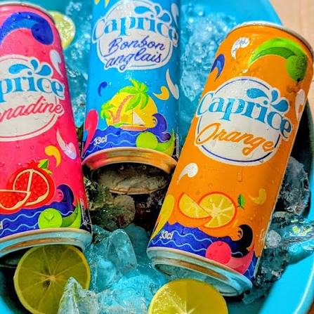
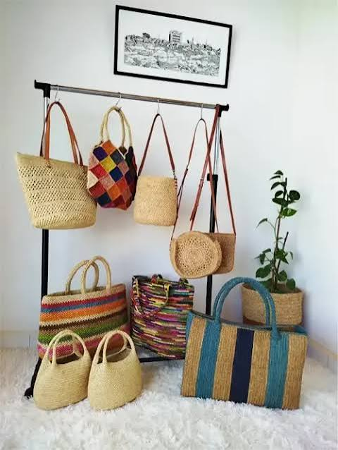
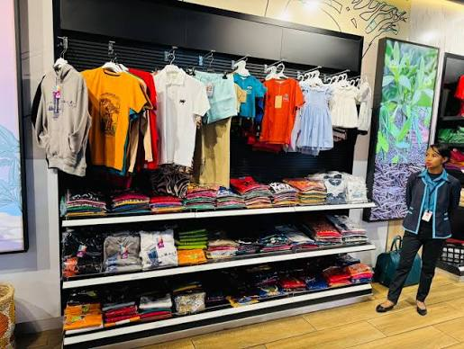
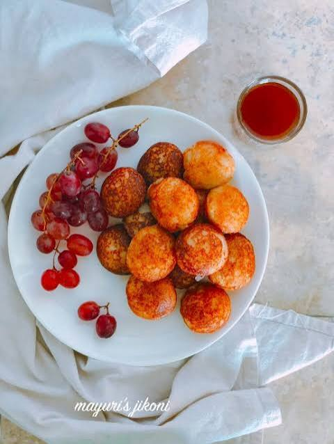
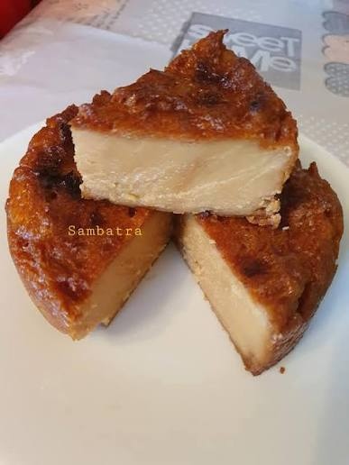
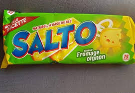
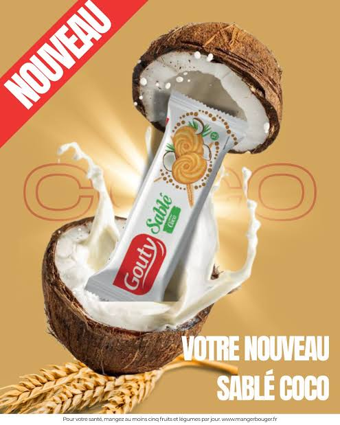
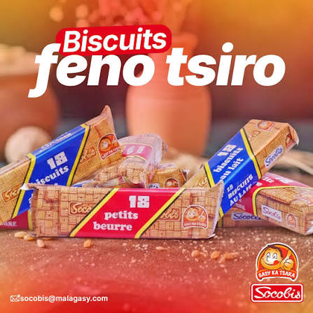

Épices
Épices
Vanille de Madagascar
Une vanille reconnue pour son parfum et son arôme.
Madagascar
Des produits issus du savoir-faire Malagasy, sélectionnés pour permettre à la diaspora de retrouver une partie de Madagascar.
Chaque produit possède une histoire. Notre objectif est de présenter les produits Malagasy et de mettre en valeur les personnes qui les produisent.
Épices
Une vanille reconnue pour son parfum et son arôme.
 Épices
Épices
Une épice issue du savoir-faire et des ressources naturelles Malagasy.
 Épices
Épices
Un café provenant de producteurs Malagasy.

BoissonsDécouvrez une sélection de boissons non alcoolisées appréciées à Madagascar.

ArtisanatDes sacs fabriqués à partir de matériaux et de techniques traditionnelles.

ArtisanatDes vêtements inspirés des traditions et du savoir-faire local.

PâtisserieUne spécialité Malagasy traditionnellement consommée au petit-déjeuner.

PâtisserieUne pâtisserie traditionnelle Malagasy à découvrir.
Un biscuit apprécié et associé aux habitudes alimentaires Malagasy.

BiscuitsUn biscuit connu et apprécié par de nombreux consommateurs.

BiscuitsUn produit pouvant rappeler les habitudes alimentaires de Madagascar.

BiscuitsUn biscuit simple qui peut rappeler certains souvenirs de Madagascar.
À travers les produits, les saveurs et l'artisanat, nous souhaitons créer un lien entre Madagascar et sa diaspora.
Découvrir notre histoire